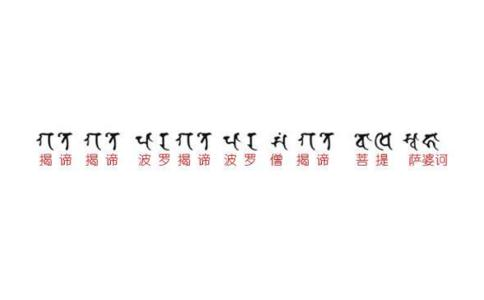

法王上次来台湾弘法时，曾经谈过心咒的内容：「得雅他，嗡，噶得，噶得，巴拉噶得，巴拉僧噶得，菩提梭哈。」
第一句「得雅他」，是如是、这样的意思。由于
说这就是道、事实的状况就是如此，词句的口气便带有自己已经完全了悟的意涵。以《广论》的讲法，一开始会先提及讲者的
《广论》内容不外乎是下士道、中士道与上士道。
「噶得，噶得，巴拉噶得，巴拉僧噶得，菩提梭哈」意为「去吧！去吧！到
此以「去吧，去吧」（「噶得，噶得」）来描述道次第，因此便有从哪里到哪里的情况，就牵涉到
我们的五取蕴，也就是轮回，经常被视为是快乐的。事实上，我们如同躺在钉床上，没有舒服之处，又或像是堕于粪坑般，没有一处不臭。轮回是业跟烦恼所造成的。我们的蕴体为何与心相续绑在一起，丢不开？根本因素虽是无明，直接因素则是贪，即爱取有支中的爱取所惹出的祸。过去曾经提过，要到
说到灭谛，三乘懂的都是同一种空—自相空，但因福德不同，由空
道谛方面，最主要要说要修什么道才能离开轮回？通常一讲到道，最被提倡的是悲心、菩提心、布施、持戒等，但是追本溯源，唯一的道是四圣谛中的道，归结起来，是空正见。为何说空正见是唯一的道？这样说并不是否认其他的道，而是其他的道之所以会成为道，是来自空正见。
总之，谈苦谛时，苦谛的范围涵盖情
简单地说，般若心咒广说开来能与《广论》相结合，怎么结合？就是先前所说的，「噶得」含有四圣谛的内涵。《广论》在中士道一节谈了四谛，在此之前谈了依止师长、听闻
「去吧」（「噶得」），究竟要往哪里去呢？「去」指的是从此岸到彼岸，站在此岸的是凡夫，即见道位以下者，见道以上则是彼岸。因此，是从这边去到那边的意思。「去吧」又包含了真正上路，与尚未上路的二种情况。若未产生任运而起的出离心，事实上是准备上路，还没真正上路。以我们现在的情况，算是准备上路，若有人产生任运而起的出离心，那算是真正上路了。不过即使是真正上路，也不见得已经抵达彼岸。也就是说，上路与到了彼岸还有一段差距。何时才算抵达彼岸？到三乘的见道才算。为何要到彼岸？无非是怕苦，就像被敌人追杀般，急着逃离，可是刚好越过地界也不算完备，仍必须继续前进，直到证得菩提才能安住。
以上是整体上的意思。
得雅他，嗡，噶得，噶得，巴拉噶得，巴拉僧噶得，菩提梭哈。
「得雅他」意思是如是，其后，应要加一个「嗡」字。但也有人不加「嗡」字，对此便有了讨论，若根据
接下来的「噶得」讲的是资粮道；第二个「噶得」讲的是加行道；「巴拉噶得」是见道，「巴拉僧噶得」是
五道是资粮道、加行道、见道、修道、无学道。问：《广论》的下士道并不是道，宗喀巴大师为什要讲下士道的内容？此处从第一个「噶得」—资粮道开始依次说出，并没有将资粮道之前的闻思含括进去，《般若经》是不是可以讲的更广些？前面解释「噶得」（「去吧」）时，是从四谛去讲。我们被业跟烦恼绑在此岸，所以要到彼岸的涅槃之城。用什么方式去？用道去。《广论》是在中士道一节谈四谛的内容，其实也可以说下士道的内容讲的也是四谛，是较粗略的四谛，上士道则是细微的四谛。下士道的三恶趣苦这部份类似讲苦谛，十恶业道是下士道的集谛，暇满人身是下士道的灭谛，十善业道是下士道的道谛。而上士道的部分，就可以把菩提心等内容拉进来看，上士道的集谛是所知障。像这样，是不是也可以将资粮道前的闻思等也纳进来讲？答案是不能。
过去
那么，《般若经》是大乘佛典，是不是去的地方只有佛果，其他什么都不谈？也不是如此，《般若经》也涵盖声闻与独觉的菩提。《般若经》直接引导的是大乘行者，间接引导的则有声闻、独觉行者。因为《般若经》引导这三类所化有情，所以偈颂所涵盖的范围也一样。
总之，《般若经》最终目标是佛果，但是此处所谈的并非最终。「去吧」，要去哪里？去菩提。哪个菩提？三个菩提。可不可以以下士道的概念说「去吧」是往善趣？不可以。即不能无限扩充到三士道，但也不局限在佛果。
我们现在没有任运而起的出离心，一旦有了任运而起的出离心，即入资粮道。此时所有的闻思、对空性、止观等一切努力，都会成为道。五道是针对空性方面去区分。努力闻思空性，还没到修而成慧，是资粮道的阶段。对空性达止观双运，是加行道。资粮道与加行道，可以用钻木取火来譬喻。当火尚未真正燃烧起来，就不是火。当火真正地燃起来，就好象见道；在火产生之前，必须先历经将木头摩擦生热的过程，这是加行道；更前则必须先寻找、搜集木头，在这阶段毫无热度可言，这为资粮道。如同有了火并不代表有饭吃，为了断除烦恼还是要修，所以之后是修道，最后是无学道。
说五道是针对空性方面去区分，从加行道以上都能谈得上去，加行道有暖、顶、忍、世第一法，这些的区分与空性的深入度有关；见道时是现证空性；见道之后仍继续修，也跟空性有关。但是资粮道与空性有何关联？资粮道又不是从对空性的了解程度区分的，因此，以空正见做为五道的区分标准是否过于勉强？
清楚了解空性，不见得已经现证空性。什么是现证？像我的眼睛看到地板，这就是现证，也就是现前所看到。现前看到空性即为现证。在谈奢摩他章时，我们说过，修止时，对所缘境要清楚、有力。清楚、有力的看到空性，不见得像亲眼所见般，二者仍是有差距。加行道时，是以止观看到空性，若以清楚度来看，可说对空性已达清楚、有力；但是若要像亲眼看到桌子般清楚地见到空性，是见道才行。对空性达止观双运时进入加行道，在此之前要做些什么？要听闻空性方面的法，并以空性为所缘，勤修止观。因此，资粮道之「资粮」，即清楚空性的资粮，「资粮」之名也是针对空性而说出的。
次说「巴拉噶得」。我们大都能知道此岸、彼岸的意思。一条河流有此岸与彼岸，一座山也有此岸与彼岸，几乎任何东西都能划分此岸与彼岸，以桌子为例，中间画一条分隔线做为左右的分野，线条以左都是左边，线条以右都是右边。虽然已经上路，只要没跨过中间线就不能算是到彼岸，现证空性即这条中间线。这边的
许多人
五道中会区分出信解与胜义二类。见道之后，三宝的好就如同亲眼所见；见道之前，都是信解。所谓信解，像我们会说要先观想皈依境，然后对其生起强烈的信解心，这样的修法称为信解修。也就是说自己没有真正看到，是自己观想三宝。从见道开始，因为已经现证空性，所以再也不会对三宝的种种功德、解脱道的合理性、业果的内容产生任何疑惑。因此见道以上是正确、无误，也是殊胜的。反过来说，资粮道、加行道就称为信解道。因此，五道中，资粮道、加行道是信解道；见道、修道、无学道是胜义道。
「巴拉噶得」中「巴拉」有正的意思，即不是错误的、不欺狂、不错乱。从另一方面来说，也有胜义的意思。亦即，字面上有正的意思，也有胜的意思。一个凡夫认真学习佛法，在资粮道之前也能了解空性，这也是一种正，但
若说到无分别地现证空性，那就只有见道才会有。在见道前，懂空性都带有世俗的戏论。总之，因为有现证空性的智慧，所以说是正，因为远离凡夫地，所以说胜。
所谓
「得雅他，嗡，噶得，噶得，巴拉噶得，巴拉僧噶得，菩提梭哈。」这里是《般若心经》的咒，是属于密或显？答案是密。并非所有的咒皆为密续，但此咒属于密续。所依据的来源很多，主要是龙树菩萨是以无上密续的观点做解释，因此，般若心咒可以与无上密续相结合。另外也有配合瑜伽部的解释。一般而言，显、密不能混合在一起讲，这是讲佛法的规矩。《般若心经》属于显法，其中出现密续的咒，这不是很奇怪吗？事实上，二者配合的目的是为了引导有情。读佛经时，有些地方看得懂，有些地方读起来，却感到与整体文意似有出入，不太吻合。若想真正了解它的意思，只能从密续中找答案，而知佛语不相冲突。有很多佛经的内文会出现一、二句属于密续的情况，此处亦不例外。
总之，《般若经》讲的是究竟一乘，虽然无论是《般若八千颂》、《般若二万五千颂》、或《般若十万颂》，字面上有提到三乘的句子，但这不代表讲的是究竟三乘，整部经讲的是究竟一乘。在解释《般若经》时，必须以显法的角度解释，但是如果遇到利根的